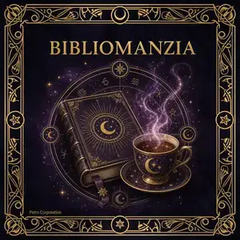

📖 BIBLIOMANZIA
IMMAGINE · BIBLIOMANZIA
La Bibliomanzia (dal greco biblion, libro, e manteia, divinazione) è l'arte antichissima di trarre responsi aprendo a caso un testo sacro o sapienziale. Il libro diventa specchio dell'anima e portale verso la voce del destino: la pagina che si rivela non è casuale — è la risposta che l'universo ha preparato per te.
Le prime testimonianze risalgono all'antica Grecia, dove si aprivano a caso le opere di Omero (Rapsodomanzia). I Romani usavano Virgilio (Sortes Virgilianae). Nel Medioevo cristiano si consultava la Bibbia — pratica diffusissima sia tra i fedeli semplici sia tra re e imperatori che prendevano decisioni militari aprendo il testo sacro con gli occhi chiusi.
⏳ STORIA E ORIGINI
- Antichità greca: La Rapsodomanzia usava Omero (Iliade, Odissea) come oracolo vivente.
- Roma antica: Le Sortes Virgilianae — si apriva l'Eneide per ricevere presagi, pratica che durerà per secoli.
- Tradizione islamica: Le Sortes Coranicae — apertura del Corano con preghiera, ancora in uso oggi in molte comunità.
- Ebraismo: Consultazione casuale della Torah o dei Salmi in momenti di crisi spirituale.
- Induismo: Apertura delle Upanishad o del Bhagavad Gita come oracolo del dharma personale.
IMMAGINE · SORTES VIRGILIANAE — ROMA ANTICA
📜 LIBRI SACRI USATI
Non esiste un unico testo "corretto" per la Bibliomanzia. La tradizione accetta qualsiasi libro considerato sacro o portatore di saggezza profonda dall'oracolo e da chi consulta. I più usati nella storia:
Bibbia
Corano
Tao Tê Ching
Bhagavad Gita
I Ching
Corpus Hermeticum
Upanishad
Omero / Virgilio
👤 PERSONAGGI CELEBRI
Carlo Magno
Prima di ogni campagna militare, consultava le Sortes Virgilianae per avere un presagio dalla fortuna.
Sant'Agostino
Descrive nelle Confessioni come un passo casuale di Paolo lo scosse così profondamente da cambiargli la vita.
Giuliano l'Apostata
L'imperatore romano consultava Omero come oracolo prima di ogni spedizione militare.
Rabelais
Nel Gargantua e Pantagruele dedica interi capitoli satirici alla Sortes Virgilianae, segno della sua diffusione popolare.
🌙 LEGGENDE
📖 La Leggenda di Virgilio Mago
Nel Medioevo, Virgilio non era solo il grande poeta latino — era considerato un mago e profeta. Si credeva che nell'Eneide avesse nascosto profezie codificate sul destino di Roma e sui secoli a venire. Consultare il testo a caso equivaleva a interrogare direttamente lo spirito del poeta, ritenuto capace di dialogare con le forze del destino anche dall'oltretomba.
☪️ Il Libro che Risponde da Solo
Nella tradizione islamica esiste una leggenda sufi secondo cui il Corano, aperto con cuore puro in stato di preghiera, non restituisce mai il passo "sbagliato". Il testo stesso saprebbe riconoscere la sincerità del cercatore e offrire la parola di cui ha bisogno. Questa credenza sopravvive intatta in molte comunità devote del Medio Oriente e dell'Asia centrale.
🌿 Il Tao che Parla
Nella Cina taoista, il Tao Tê Ching era considerato un essere vivente — non un testo inerte ma un'entità sapienziale che "sceglieva" quale verso rivelare al cercatore. I monaci taoisti lo aprivano dopo un lungo periodo di meditazione immobile, credendo che la mente svuotata permettesse alla mano di muoversi guidata direttamente dal Tao stesso.
☕ TASSEOMANZIA
IMMAGINE · LETTURA DEI FONDI DI TÈ
La Tasseomanzia (dal turco tassa, tazza, e greco manteia) è la divinazione attraverso la lettura dei fondi di tè, caffè o vino rimasti nella tazza dopo la bevanda. Ogni forma, macchia e simbolo che si forma casualmente nel residuo è un messaggio del subconscio e delle forze invisibili che ci circondano.
Le origini affondano nell'Asia Centrale e nel Medio Oriente, diffondendosi in Europa attraverso le rotte commerciali ottomane nel XVII secolo. In Turchia e Grecia la lettura del caffè (tasseomanzia del caffè) è ancora oggi una tradizione quotidiana e sociale, parte integrante della cultura ospitale.
🌍 DIFFUSIONE NEL MONDO
- Turchia e Grecia: La fal bakma (lettura del caffè turco) è una pratica quotidiana, spesso condivisa tra amiche dopo il pasto.
- Irlanda e Inghilterra: La lettura dei fondi di tè (tasseography) è storicamente radicata nella cultura celtica e vittoriana.
- Romania: Le babele ghicitoare (nonne indovine) leggevano fondi di vino e caffè in cerimonie familiari.
- Cina: Lettura dei residui di tè verde in ciotole di porcellana bianca — tecnica che richiede anni di apprendistato.
- Persia: Collegata alle pratiche degli specchi magici e alla tradizione dei dervish sufi.
IMMAGINE · LETTURA DEL CAFFÈ TURCO
🔣 I SIMBOLI PRINCIPALI
I tasseomanti riconoscono oltre 200 simboli nella tradizione classica. Ecco i più comuni e il loro significato universalmente accettato:
Serpente
Aquila
Luna
Ancora
Fiore
Chiave
Goccia
Stella
Montagna
Onda
📋 MODO D'USO
IMMAGINE · PREPARAZIONE DELLA TAZZA
🍵 RITUALE CLASSICO PASSO PER PASSO
Per praticare la vera Tasseomanzia seguendo la tradizione turca e celtica:
- Prepara una tazza di tè o caffè macinato senza filtro — i fondi devono rimanere nella tazza.
- Mentre bevi, tieni la tua domanda nel cuore. Bevi lentamente, pensando intensamente a ciò che vuoi sapere.
- Lascia solo un piccolo residuo di liquido. Copri la tazza con il piattino e capovolgi in senso orario.
- Aspetta che la tazza raffreddi completamente (3–5 minuti). In questo tempo, il tuo subconscio lavora sui simboli.
- Rigira la tazza e inizia a leggere dal bordo (il presente) verso il centro (il futuro distante).
- Cerca forme, animali, oggetti, lettere. Non forzare — lascia che le immagini emergano spontaneamente.
- Il simbolo vicino all'ansa della tazza indica ciò che è vicino a te; il lato opposto è ciò che è lontano.
👤 MAESTRE E TRADIZIONI CELEBRI
Falcı Hayriye
Celebre tasseomante ottomana del XVIII sec., si dice consultasse le concubine del sultano Selim III.
Tradizione Romany
I Rom d'Europa portarono la tasseomanzia dall'India all'Europa, integrandola con cartomanzia e chiromanzia.
Streghe delle Highlands
Nelle Highlands scozzesi, le wisewomen leggevano i fondi di tè nelle lunghe serate invernali.
Miss Miniver
Personaggio letterario di H.G. Wells, rappresenta la "tipica" lettrice di fondi di tè vittoriana, colta e mistica.
🌀 LEGGENDE E STORIE
☕ La Tazza dell'Amante Tradito
Una leggenda ottomana del XVII secolo narra di una giovane donna che ogni mattina leggeva il fondo del caffè del marito mercante. Un giorno vide nella tazza il simbolo della nave capovolta e della spada — tradimento e pericolo in viaggio. Convinse il marito a posticipare la partenza. La nave su cui sarebbe dovuto imbarcarsi affondò. Da allora nel bazaar di Istanbul si dice: "Non schernire la lettrice del caffè".
🍃 Il Tè dei Monaci Zen
In Giappone esiste una pratica segreta delle scuole Zen chiamata chanomantic — la meditazione sui fondi del tè matcha. I monaci non cercano simboli: osservano il fondo con mente vuota finché un'immagine emerge da sola. Si dice che questo processo, praticato per decenni, sviluppi la capacità di vedere il futuro non come previsione ma come probabilità del karma.
🌙 La Profetessa di Vienna
Nel 1800, a Vienna viveva una donna di origine ungherese nota come die Kaffeeseherin (la Veggente del Caffè). Si racconta che abbia predetto con precisione la battaglia di Austerlitz leggendo una tazza di caffè turco per un ufficiale bonapartista. Quando questi tornò vittorioso, la cercò per ringraziarla. Aveva lasciato la città il giorno prima, lasciando sulla porta una sola tazza rovesciata.
🌐 BIBLIOMANZIA & TASSEOMANZIA — DIFFERENZE E SINERGIE
Entrambe le arti si basano sul principio della sincronicità jungiana: l'idea che eventi apparentemente casuali contengano significato per chi li osserva con mente aperta. La Bibliomanzia lavora sull'intelletto e la parola; la Tasseomanzia lavora sull'immagine e l'intuizione visiva. Usate insieme nella stessa sessione, si dice completino una lettura integrale: la parola del libro fornisce il messaggio razionale, i simboli nella tazza quello simbolico-emotivo.